Team -> Remote -> Clone
Working from Gephi’s source
2017-02-28
last modified: 2023-04-03
== !
Gephi workshops
I organize online workshops and personalized trainings for Gephi, for beginners and experts. To schedule one or to get more information: analysis@exploreyourdata.com.
Presentation of this tutorial
This tutorial explains how to get and modify Gephi’s source code, and build Gephi from it.
Figure 1. The obligatory meme
We will:
download the source code
run Gephi from the source
modify Gephi’s openGL visualization engine
run Gephi in this modified version
The modified version of Gephi that we will implement will have for effect to add circles around nodes communities.
This project originates from Susie Lu’s creation.
We should get something like:
For this tutorial you will need:
some knowledge of Java.
NetBeans installed (up to date instructions here). Eclipse, IntelliJ or any other code editor won’t do.
a good internet connection since we will download a lot of small dependencies.
no Github account is necessary (if you have one, fork Gephi before doing all the steps below).
Downloading the source code
Open NetBeans.
In NetBeans, go to
Team → Git → Clone
(can’t find this menu in NetBeans? read an alternative just below)
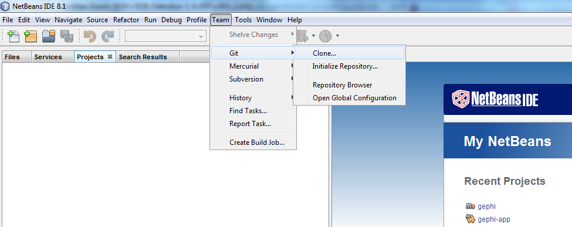
Figure 2. Cloning the gephi source
- NOTE
if you already have projects opened in NetBeans, the menu Team → Git → Clone is replaced by:
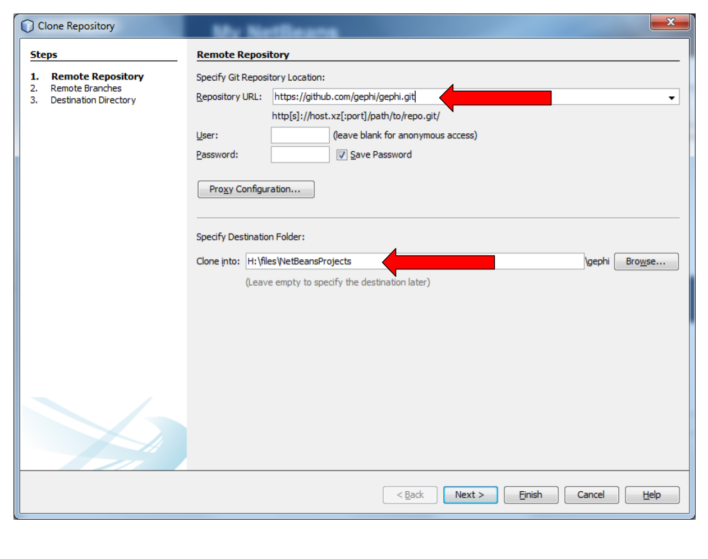
Figure 3. Cloning the gephi source
For
Repository URL, put the address of the Gephi repository on Github, which is:
for
Clone into, select a folder on your disk. No need to create a new folder inside, the cloning process will do it.Github User and password can be left empty
Then click on
Next
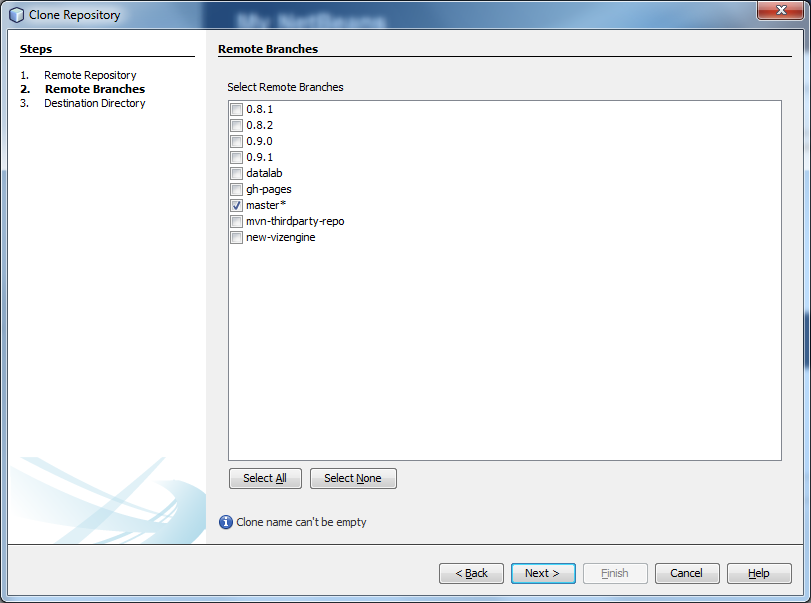
Figure 4. Select Master and click next
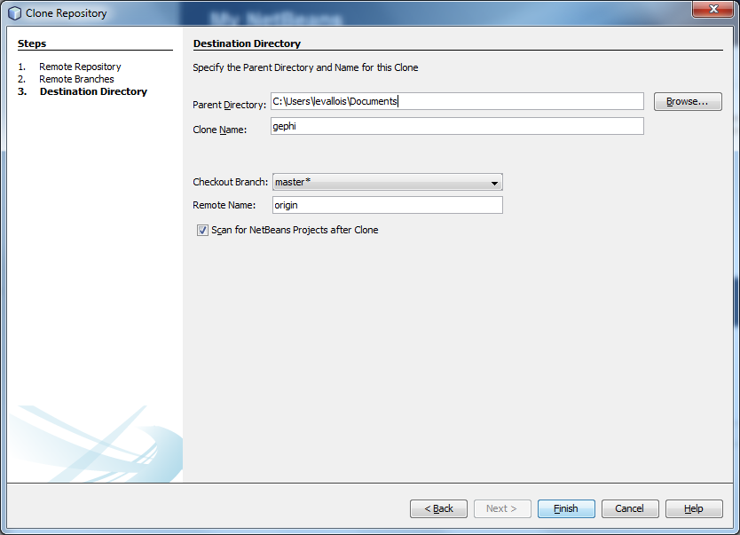
Figure 5. Leave as it is and click on Finish
At this step, NetBeans starts downloading the source code of Gephi - not all of it. Should take a couple of minutes, then:
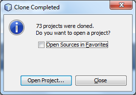
Figure 6. Click on Open Project
Select (highlight in blue) the line mentioning Gephi, and click on "Open"
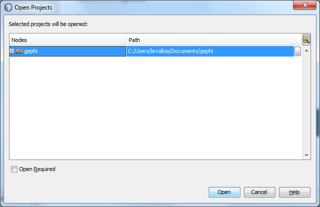
Figure 7. Click on Open Project
You should now see Gephi as a project on the left in NetBeans:
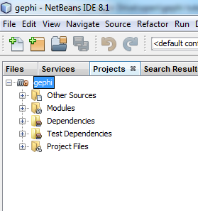
Figure 8. Gephi project
Right click on the project and select "Build with dependencies". This will download all the rest of the source, which can take roughly 5 to 20 minutes.
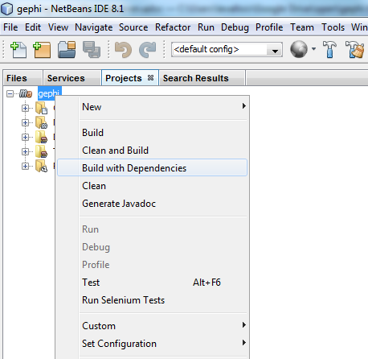
Figure 9. Building the project
Running Gephi from source
When the build is complete, expand the folder "Modules" of the Gephi project, and double click on "gephi-app":
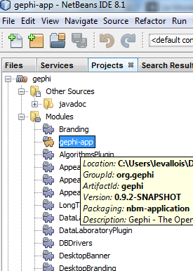
Figure 10. Opening the gephi-app submodule
This opens a new project on the left of NetBeans, called "gephi-app". This is a submodule of Gephi, dedicated to managing its launch.
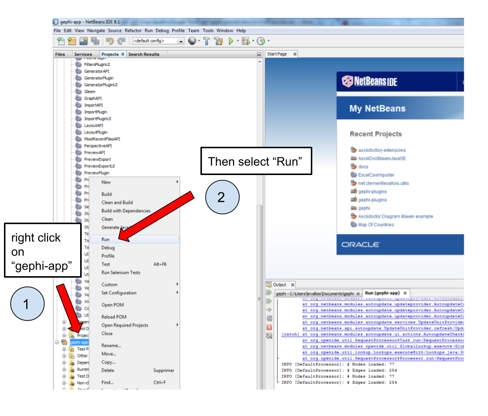
Figure 11. Launching Gephi
And Gephi launches!
Now that we know how to run Gephi from source, we can modify the source and see how it goes.
Modifying Gephi’s openGL visualization engine
We are going to add circles which will enclose groups of nodes (aka communities). In three steps:
Open the
VisualizationImplmoduleCreate simple classes for the circles
Add some code in the class which manages the display in OpenGL, so that circles get created
1. Open the VisualizationImpl module
In the gephi project, in the folder Modules, double click on the VisualizationImpl module:
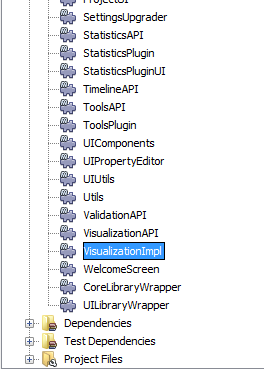
Figure 12. Opening VisualizationImpl
2. Create simple classes for the circles
Create a new package and add 3 classes in it: Circle.java, Point.java, SmallestEnclosingCircle.java.
(I merely adapted these classes from this website)
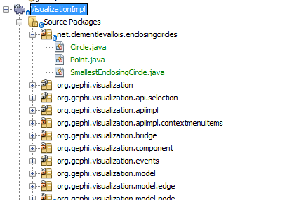
Figure 13. Three classes
The code of these classes can be found here.
3. Add the circle creation logic to the class managing the OpenGL display
Open the package org.gephi.visualization.opengl, and inside open CompatibilityEngine.java:
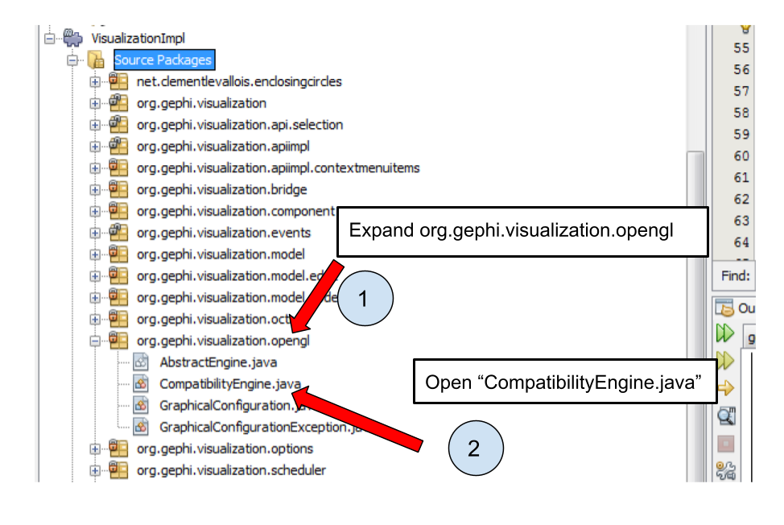
Figure 14. opening CompatibilityEngine.java
No need to understand most of the code in this class.
But we see that starting at line 194, a loop on nodes starts:
We will put nodes in a map (declared above, at line 155) where:
keys are the name of the cluster nodes belong too,
values are the Set of Nodes corresponding to the cluster.
(yes, this implies the nodes must have an attribute called "Modularity Class" showing the cluster they belong to)
The code you should add to assign nodes to clusters in the map is in lines 197-203
Then, lines 210-245 iterate on the map, and create the circles around clusters.
The logic of the circle creation in OpenGL can be understood rather easily, by copying and modyfying the code used just above for the creation of nodes, and by looking at the online documentation on how to create shapes in OpenGL.
That’s it. Now just run Gephi from source as we did before. From Gephi, open a network where nodes have a "Modularity Class" attribute, and Gephi will draw circles around nodes from the same clusters:
More tutorials on using the source code of Gephi
to go further
Visit the Gephi group on Facebook to get help,
or visit the website for more tutorials
Give a try to nocodefunctions.com, the web application I develop to create networks for Gephi. Click-and-point, free, no registration needed.